Гребные винты для лодочных моторов Yamaha
 Прайс-лист (цены) на гребные винты для лодочных моторов Yamaha
Прайс-лист (цены) на гребные винты для лодочных моторов Yamaha
|
9 шлицов на валу 3011-073-05S для 2.5 л.с. 3011-075-07S для 5 л.с. |
|||||||
| Фото | Серия | Номер винта Solas | Количество лопастей | Внешний диаметр винта | Шаг винта | Вращение винта | Установочный комплект |
|---|---|---|---|---|---|---|---|
| 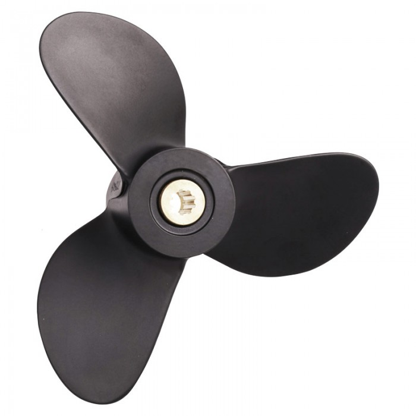 | Amita 3 | 3011-073-05S | 3 | 7.3" | 5" | Правое | Не нужен |
| 3011-075-07S | 3 | 7.5" | 7" | Правое | |||
{kind=link}
|
7 шлицов на валу 6 л.с. (2х такт.) 1986 - 2000 гг. F6 (4х такт.) 2001 - 2010 гг. 8 л.с. (2х такт.) 1986 - 2009 гг. F8 (4х такт.) 2001 г. - наст. время F9.9 (4х такт.) 2008 г. - наст. время |
|||||||
| Фото | Серия | Номер винта Solas | Количество лопастей | Внешний диаметр винта | Шаг винта | Вращение винта | Установочный комплект |
|---|---|---|---|---|---|---|---|
| 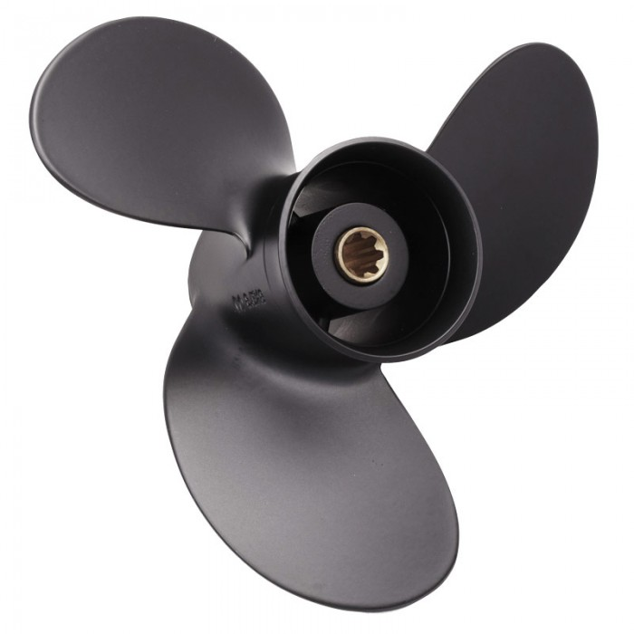 | Amita 3 | 3011-085-07 | 3 | 8.5" | 7" | Правое | Не нужен |
| 3011-085-08 | 3 | 8.5" | 8" | Правое | |||
| 3011-085-09 | 3 | 8.5" | 9" | Правое | |||
|
2011-083-08P 8 л.с 1976~1983 3011-090-07P 8 л.с. все годы |
|||||||
| 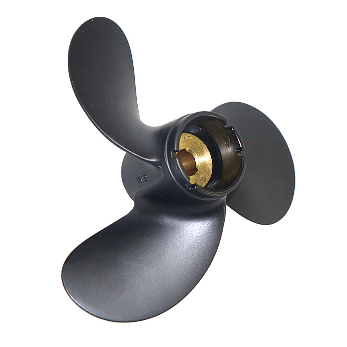 | Amita 3 | 2011-083-08P | 3 | 8.3" | 8" | Правое | Не нужен |
| Amita 3 | 3011-090-07-P | 3 | 9" | 7" | Правое | Не нужен | |
{kind=link}
{kind=link}
|
Диаметр ступицы вала 2 1/2" 8 шлицов на валу T8, T9.9 все годы 9.9 л.с. (2-х такт.) 1984 - 2009 гг. F9.9 (4-х такт.) 2000 - 2007 гг. 15 л.с. (2-х такт.) 1984 - 2009 гг. F15 (4-х такт.) 1998 г. - наст. время F15 C 2007 г. - наст. время F20 (4-х такт.) 2007 г. - наст. время |
|||||||
| Фото | Серия | Номер винта Solas | Количество лопастей | Внешний диаметр винта | Шаг винта | Вращение винта | Установочный комплект |
|---|---|---|---|---|---|---|---|
| 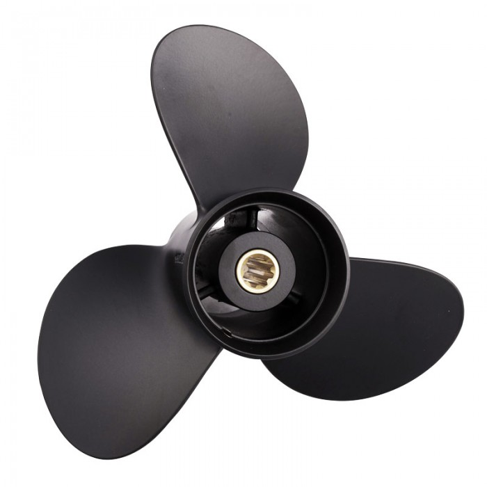 | Amita 3 | 3111-093-07 | 3 | 9.25" | 7" | Правое | Не нужен |
| 3111-093-08 | 3 | 9.25" | 8" | Правое | |||
| 3111-093-09 | 3 | 9.25" | 9" | Правое | |||
| 3111-093-10 | 3 | 9.25" | 10" | Правое | |||
| 3111-093-11 | 3 | 9.25" | 11" | Правое | |||
| 3111-093-12 | 3 | 9.25" | 12" | Правое | |||
| 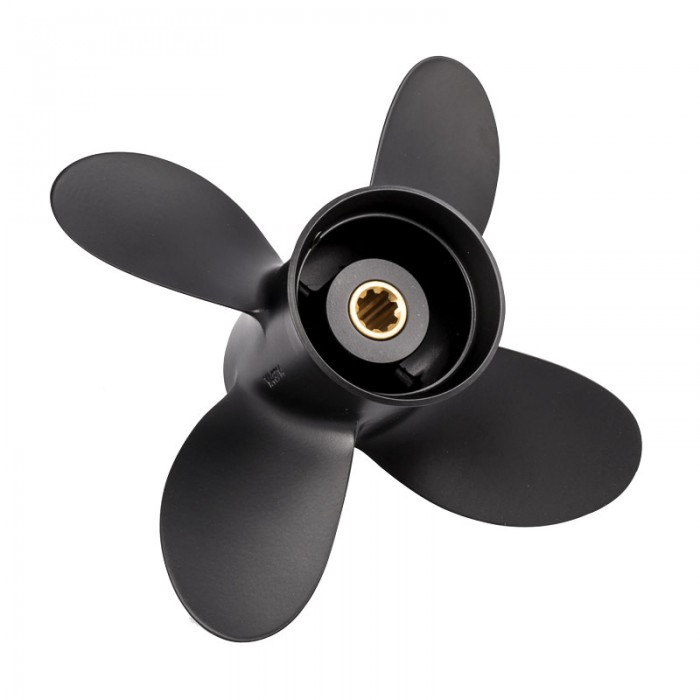 | Amita 4 | 3113-093-07 | 4 | 9.25" | 7" | Правое | Не нужен |
| 3113-093-08 | 4 | 9.25" | 8" | Правое | |||
| 3113-093-09 | 4 | 9.25" | 9" | Правое | |||
| 3113-093-10 | 4 | 9.25" | 10" | Правое | |||
| 3113-093-11 | 4 | 9.25" | 11" | Правое | |||
| 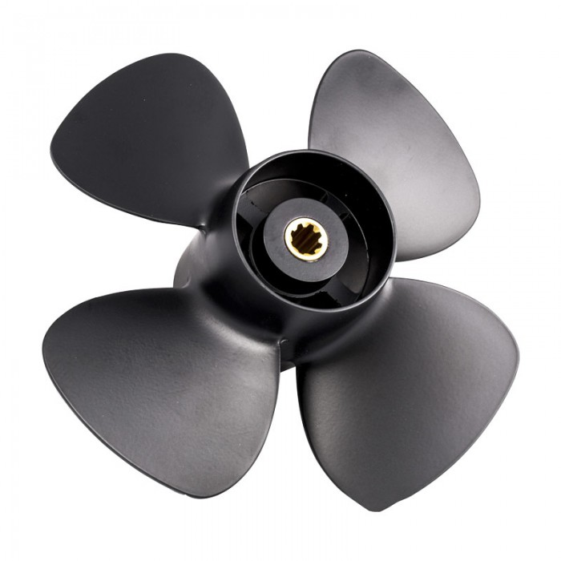 | Amita 4 | 3113-100-05 | 4 | 10" | 5" | Правое | Не нужен |
| 3113-100-07 | 4 | 10" | 7" | Правое | |||
| 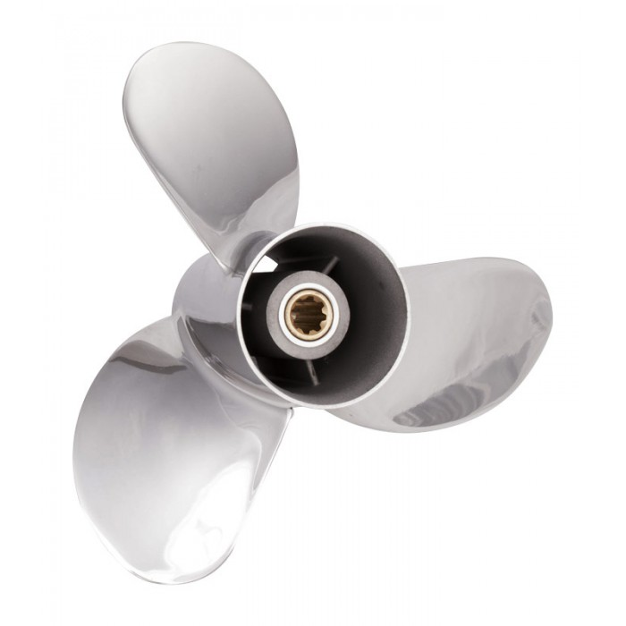 | Saturn | 3121-093-07 | 3 | 9.25" | 7" | Правое | Не нужен |
| 3121-093-08 | 3 | 9.25" | 8" | Правое | |||
| 3121-093-09 | 3 | 9.25" | 9" | Правое | |||
| 3121-093-10 | 3 | 9.25" | 10" | Правое | |||
| 3121-093-11 | 3 | 9.25" | 11" | Правое | |||
| 3121-093-12 | 3 | 9.25" | 12" | Правое | |||
|
15HP 1976-1983 W15HP 1976-1983 20HP 1976-1978 25HP 1977-1979 28HP 1976-1978 |
|||||||
| 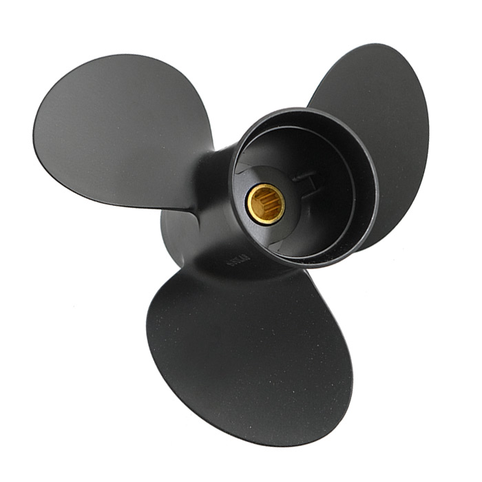 | Amita 3 | 2111-093-11P | 3 | 9.25" | 11" | Правое | Не нужен |
{kind=link}
{kind=link}
{kind=link}
{kind=link}
{kind=link}
|
Диаметр ступицы вала 3" 10 шлицов на валу 20 л.с. 1996 - 1997 гг. 25 л.с. 1980 г. - наст. время F25 (4-х такт) 1998-2006, 2010 - наст. время 30 л.с. (2-х такт) 1979 г. - наст. время |
|||||||
| Фото | Серия | Номер винта Solas | Количество лопастей | Внешний диаметр винта | Шаг винта | Вращение винта | Установочный комплект |
|---|---|---|---|---|---|---|---|
| 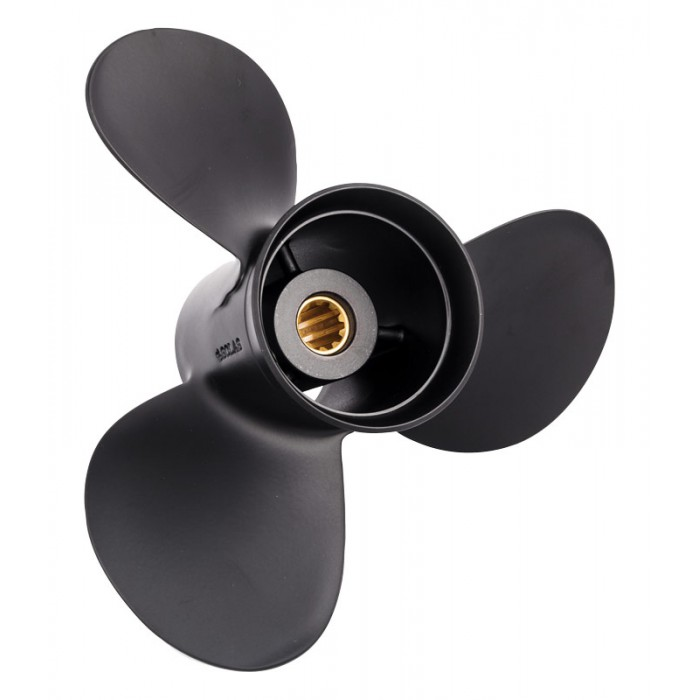 | Amita 3 | 3211-099-09 | 3 | 9.9" | 9" | Правое | Не нужен |
| 3211-099-10 | 3 | 9.9" | 10" | Правое | |||
| 3211-099-11 | 3 | 9.9" | 11" | Правое | |||
| 3211-099-12 | 3 | 9.9" | 12" | Правое | |||
| 3211-099-13 | 3 | 9.9" | 13" | Правое | |||
| 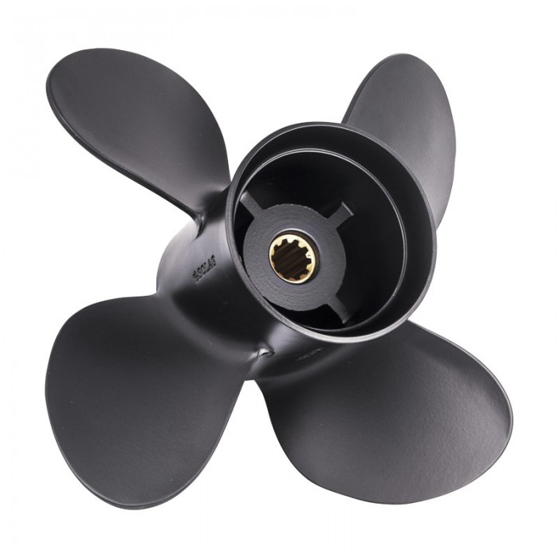 | Amita 4 | 3213-100-13 | 4 | 10" | 13" | Правое | Не нужен |
| 3213-100-14 | 4 | 10" | 14" | Правое | |||
| 3213-100-15 | 4 | 10" | 15" | Правое | |||
| 3213-101-12 | 4 | 10.1" | 12" | Правое | |||
| 3213-102-11 | 4 | 10.2" | 11" | Правое | |||
| 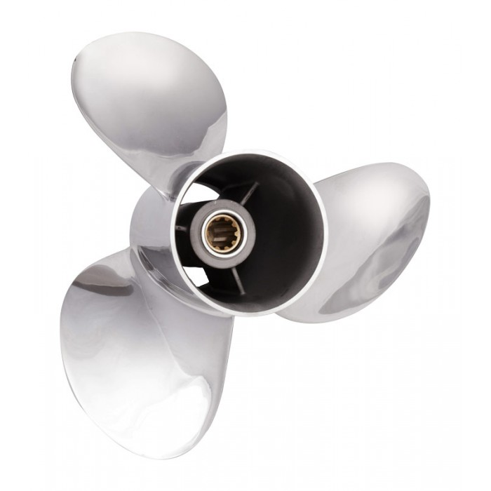 | New Saturn | 3231-100-14 | 3 | 10" | 14" | Правое | Не нужен |
| 3231-100-15 | 3 | 10" | 15" | Правое | |||
| 3231-101-13 | 3 | 10.1" | 13" | Правое | |||
| 3231-103-12 | 3 | 10.3" | 12" | Правое | |||
| 3231-105-11 | 3 | 10.5" | 11" | Правое | |||
| 3231-108-10 | 3 | 10.8" | 10" | Правое | |||
| 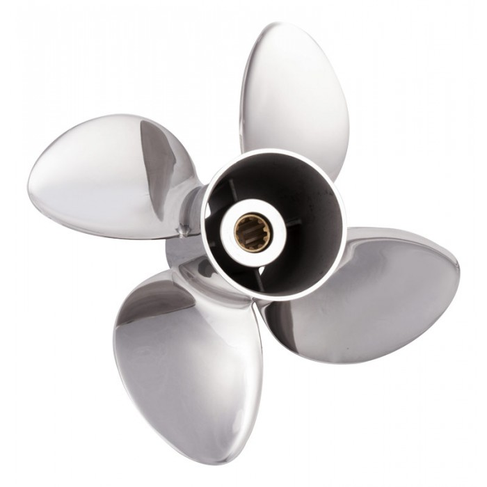 | New Saturn | 3233-100-09 | 4 | 10" | 9" | Правое | Не нужен |
| 3233-100-10 | 4 | 10" | 10" | Правое | |||
{kind=link}
{kind=link}
{kind=link}
{kind=link}
|
Диаметр ступицы вала 3 1/2" 13 шлицов на валу T25 HP 2010 г. - наст. время F30 (4-х такт) 2001 - 2005 гг. 40 л.с. (Includes C40) .... 1984 г. - наст. время F40 (4-х такт) 1999 г. - наст. время 48 л.с. 1995 г. - 2000 гг. 50 л.с. (not T50) 1984 г. - наст. время F50 (4-х такт) 1995 г. - наст. время 55 л.с. 1976 - 1995 гг. 60 л.с. 1976 - 1991 гг. F60 (4-х такт) 1999 г. - наст. время |
|||||||
| Фото | Серия | Номер винта Solas | Количество лопастей | Внешний диаметр винта | Шаг винта | Вращение винта | Установочный комплект |
|---|---|---|---|---|---|---|---|
| 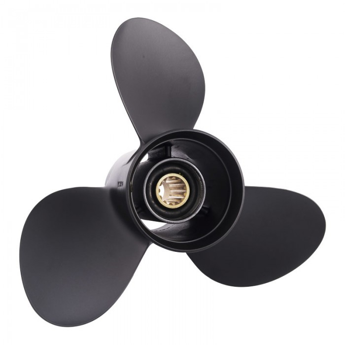 | Amita 3 | 3311-110-15MF | 3 | 11" | 15" | Правое | Не нужен |
| 3311-110-16 | 3 | 11" | 16" | Правое | |||
| 3311-110-17 | 3 | 11" | 17" | Правое | |||
| 3311-111-13MF | 3 | 11.1" | 13" | Правое | |||
| 3311-111-14MF | 3 | 11.1" | 14" | Правое | |||
| 3311-114-12MF | 3 | 11.4" | 12" | Правое | |||
| 3311-116-11MF | 3 | 11.6" | 11" | Правое | |||
| 3311-118-10 | 3 | 11.8" | 10" | Правое | |||
| 3311-121-09MF | 3 | 12.1" | 9" | Правое | |||
| 3311-122-07MF | 3 | 12.2" | 7" | Правое | |||
| 3311-122-08MF | 3 | 12.2" | 8" | Правое | |||
| 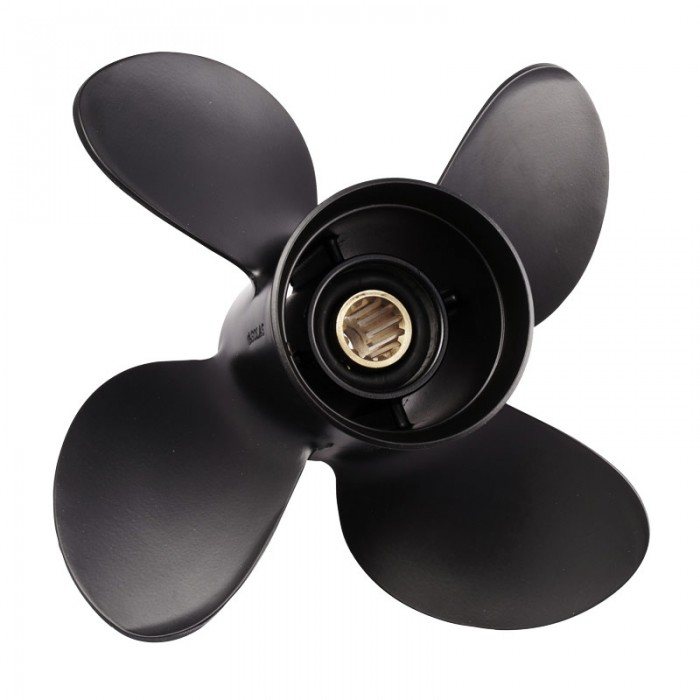 | Amita 4 | 3313-105-13MF | 4 | 10.5" | 13" | Правое | Не нужен |
| 3313-105-14MF | 4 | 10.5" | 14" | Правое | |||
| 3313-108-12MF | 4 | 10.8" | 12" | Правое | |||
| 3313-111-11MF | 4 | 11.1" | 11" | Правое | |||
| 3313-114-10MF | 4 | 11.4" | 10" | Правое | |||
| 3313-118-09MF | 4 | 11.8" | 9" | Правое | |||
| 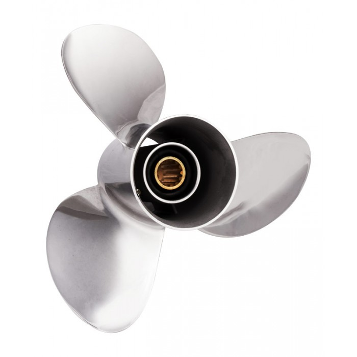 | New Saturn | 3331-110-15MF | 3 | 11" | 15" | Правое | Не нужен |
| 3331-111-13MF | 3 | 11.1" | 13" | Правое | |||
| 3331-111-14MF | 3 | 11.1" | 14" | Правое | |||
| 3331-114-12MF | 3 | 11.4" | 12" | Правое | |||
| 3331-116-11MF | 3 | 11.6" | 11" | Правое | |||
| 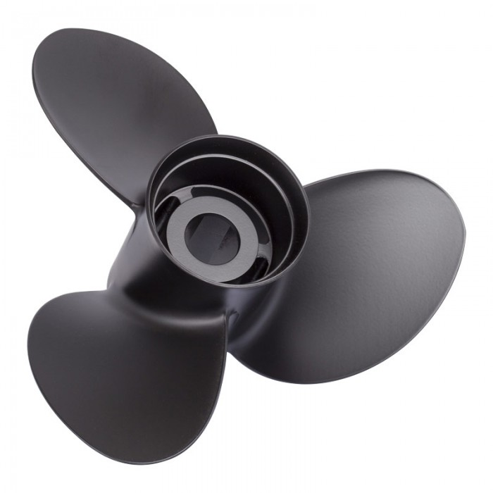 | Rubex 3 | 9311-110-15 | 3 | 11" | 15" | Правое | RBX-117 |
| 9311-111-13 | 3 | 11.1" | 13" | Правое | |||
| 9311-111-14 | 3 | 11.1" | 14" | Правое | |||
| 9311-114-12 | 3 | 11.4" | 12" | Правое | |||
| 9311-116-11 | 3 | 11.6" | 11" | Правое | |||
| 9311-120-10 | 3 | 11" | 10" | Правое | |||
| 9311-121-09 | 3 | 12.1" | 9" | Правое | |||
| 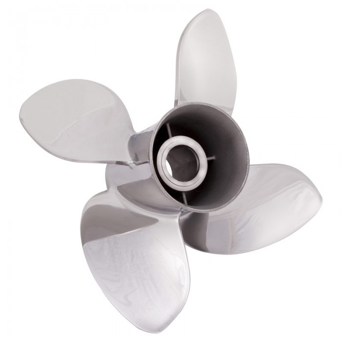 | Rubex C4 | 9333-115-12 | 4 | 11.5" | 12" | Правое | RBX-117 |
| 9333-115-13 | 4 | 11.5" | 13" | Правое | |||
| 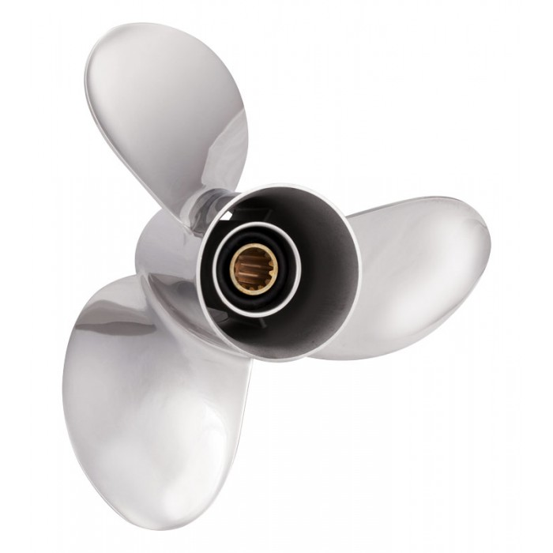 | Saturn | 3321-108-16 | 3 | 10.8" | 16" | Правое | Не нужен |
| 3321-110-15 | 3 | 11" | 15" | Правое | |||
| 3321-110-17 | 3 | 11" | 17" | Правое | |||
| Yamaha 40 л.с. Pin Drive | |||||||
| Amita 3 | 3311-115-10-P | 3 | 11.5" | 10" | Правое | Не нужен | |
| 3311-115-11-P | 3 | 11.5" | 11" | Правое | |||
| 3311-115-12-P | 3 | 11.5" | 12" | Правое | |||
{kind=link}
{kind=link}
{kind=link}
{kind=link}
{kind=link}
{kind=link}
|
Диаметр ступицы вала 3 1/2" 13 шлицов на валу 60 л.с. любой год 70 л.с. любой год |
|||||||
| Фото | Серия | Номер винта Solas | Количество лопастей | Внешний диаметр винта | Шаг винта | Вращение винта | Установочный комплект |
|---|---|---|---|---|---|---|---|
| 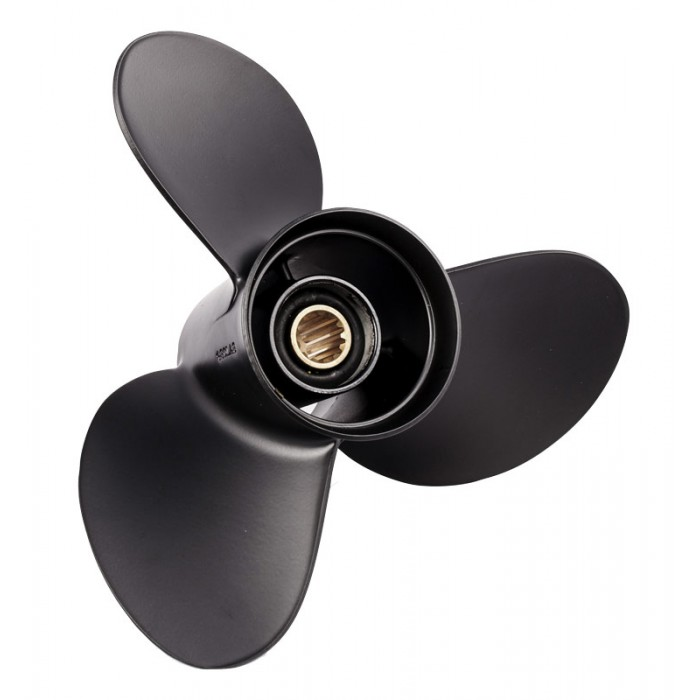 | Amita 3 | 3311-114-15 | 3 | 11.4" | 15" | Правое | Не нужен |
| 3311-114-16 | 3 | 11.4" | 16" | Правое | |||
| 3311-116-12MF | 3 | 11.6" | 12" | Правое | |||
| 3311-116-13MF | 3 | 11.6" | 13" | Правое | |||
| 3311-116-14MF | 3 | 11.6" | 14" | Правое | |||
{kind=link}
|
Диаметр ступицы вала 4 1/4" 15 шлицов на валу Т50 л.с. (4-х такт) 1996 г. - наст. время 60 л.с. 1992 г. - 2005 гг. Т60 л.с. (4-х такт) 2003 г. - наст. время 70 л.с. 1984 г. - наст. время F70 (4-х такт) 2010 г. - наст. время 75 л.с. 1994 г. -1999 гг. F75 (4-х такт) 2003 г. - наст. время 80 л.с. 1997 г. F80 (4-х такт) 1999 г. - 2002 гг. 85 л.с. 1991 - 1997 гг. 90 л.с. 1984 г. - наст. время F90 (4-х такт) 1999 г. - наст. время F100 (4-х такт) 1999 г. - 2002 гг. 115 л.с. 1984 г. - наст. время F115 (4-х такт) 2000 г. - наст. время 130 л.с. 1984 г.- 2003 гг. |
|||||||
| Фото | Серия | Номер винта Solas | Количество лопастей | Внешний диаметр винта | Шаг винта | Вращение винта | Установочный комплект |
|---|---|---|---|---|---|---|---|
| 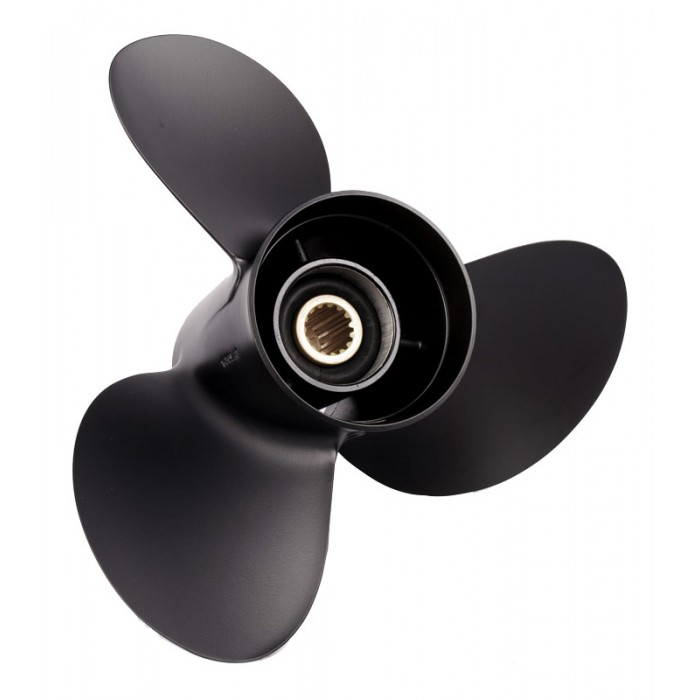 | Amita 3 | 3411-130-19MF | 3 | 13" | 19" | Правое | Не нужен |
| 3411-130-21MF | 3 | 13" | 21" | Правое | |||
| 3411-131-19 | 3 | 13.1" | 19" | Правое | |||
| 3411-132-17 | 3 | 13.2" | 17" | Правое | |||
| 3411-133-17MF | 3 | 13.3" | 17" | Правое | |||
| 3411-134-15 | 3 | 13.4" | 15" | Правое | |||
| 3411-135-13 | 3 | 13.5" | 13" | Правое | |||
| 3411-135-15MF | 3 | 13.5" | 15" | Правое | |||
| 3411-138-13MF | 3 | 13.8" | 13" | Правое | |||
| 3411-140-09MF | 3 | 14" | 9" | Правое | |||
| 3411-140-11MF | 3 | 14" | 11" | Правое | |||
| 3412-133-17MF | 3 | 13.3" | 17" | Левое | |||
| 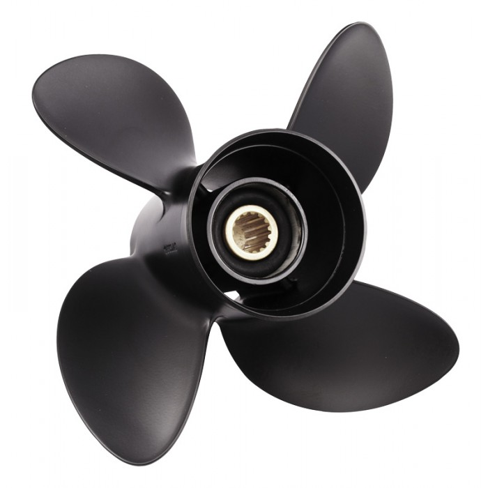 | Amita 4 | 3413-125-19MF | 4 | 12.5" | 19" | Правое | Не нужен |
| 3413-125-21MF | 4 | 12.5" | 21" | Правое | |||
| 3413-128-17MF | 4 | 12.8" | 17" | Правое | |||
| 3413-130-15MF | 4 | 13" | 15" | Правое | |||
| 3413-133-13MF | 4 | 13.3" | 13" | Правое | |||
| 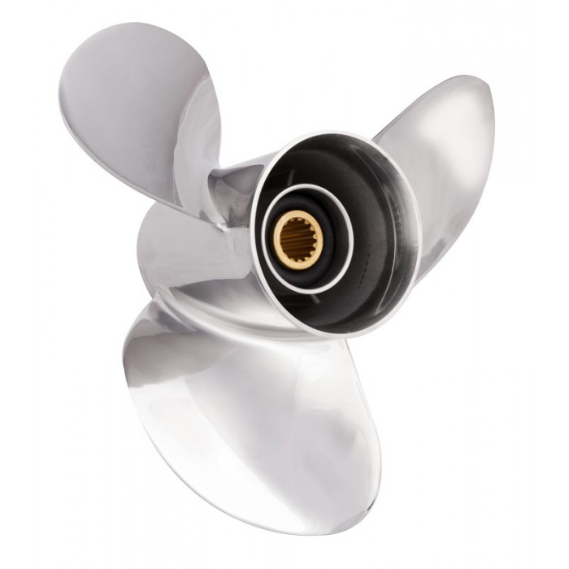 | New Saturn | 3431-130-19MF | 3 | 13" | 19" | Правое | Не нужен |
| 3431-130-21MF | 3 | 13" | 21" | Правое | |||
| 3431-133-17MF | 3 | 13.3" | 17" | Правое | |||
| 3431-135-15MF | 3 | 13.5" | 15" | Правое | |||
| 3431-138-13MF | 3 | 13.8" | 13" | Правое | |||
| 3431-140-11MF | 3 | 14" | 11" | Правое | |||
| 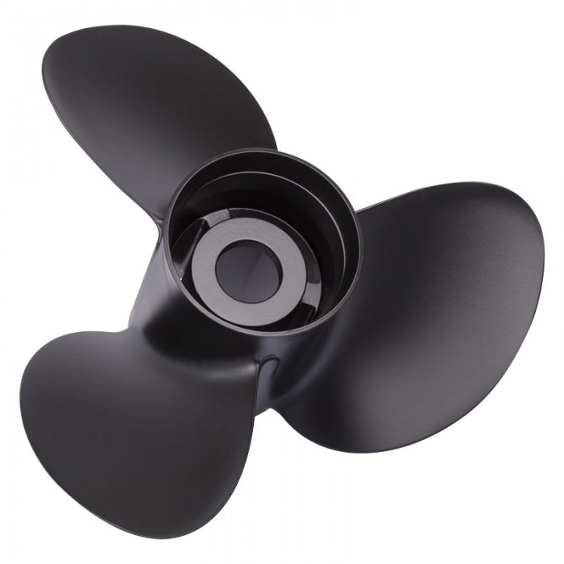 | Rubex 3 | 9411-132-19 | 3 | 13.2" | 19" | Правое | RBX-102 RBX-103 RBX-108 RBX-203 |
| 9411-132-21 | 3 | 13.2" | 21" | Правое | |||
| 9411-133-17 | 3 | 13.3" | 17" | Правое | |||
| 9411-135-15 | 3 | 13.5" | 15" | Правое | |||
| 9411-138-13 | 3 | 13.8" | 13" | Правое | |||
| 9411-140-11 | 3 | 14" | 11" | Правое | |||
| 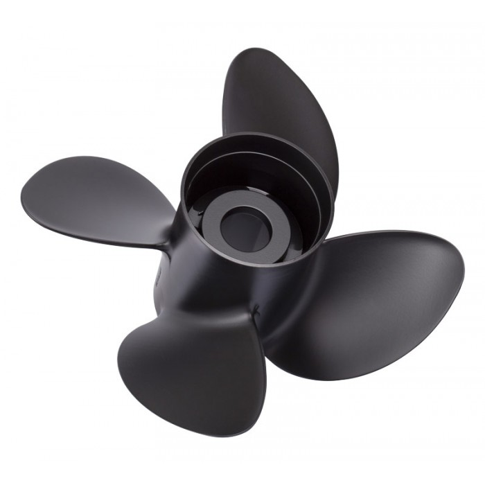 | Rubex 4 | 9413-125-19 | 4 | 12.5" | 19" | Правое | RBX-102 RBX-103 RBX-108 RBX-203 |
| 9413-128-17 | 4 | 12.8" | 17" | Правое | |||
| 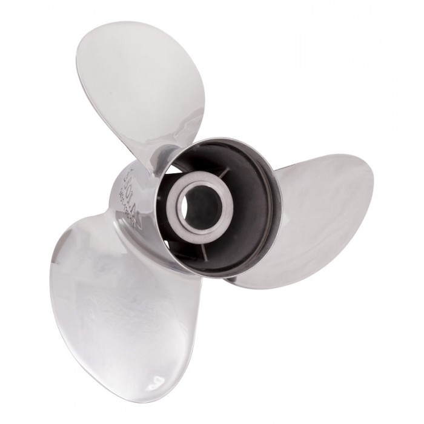 | Rubex NS3 | 9431-130-19 | 3 | 13" | 19" | Правое | RBX-102 RBX-103 RBX-108 RBX-203 |
| 9431-130-21 | 3 | 13" | 21" | Правое | |||
| 9431-133-17 | 3 | 13.3" | 17" | Правое | |||
| 9431-135-15 | 3 | 13.5" | 15" | Правое | |||
| 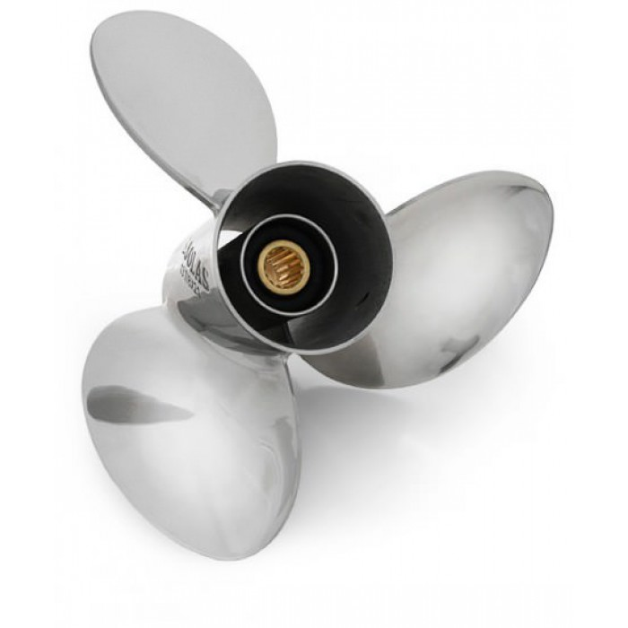 | HR Titan3 | 3451-139-17 | 3 | 13.9" | 17" | Правое | Не нужен |
| 3451-139-19 | 3 | 13.9" | 19" | Правое | |||
| 3451-139-21 | 3 | 13.9" | 21" | Правое | |||
| 3451-139-23 | 3 | 13.9" | 23" | Правое | |||
| 3451-139-25 | 3 | 13.9" | 25" | Правое | HR Titan3 | 3452-139-17 | 3 | 13.9" | 17" | Левое | Не нужен |
| 3452-139-19 | 3 | 13.9" | 19" | Левое | |||
| 3452-139-21 | 3 | 13.9" | 21" | Левое | |||
| 3452-139-23 | 3 | 13.9" | 23" | Левое | |||
| 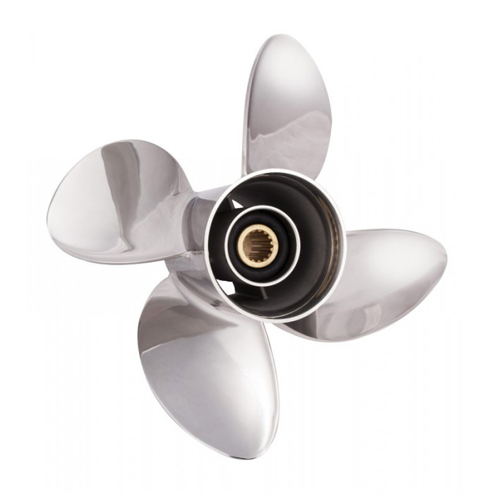 | HR Titan4 | 3453-130-17MF | 4 | 13" | 17" | Правое | Не нужен |
| 3453-130-19MF | 4 | 13" | 19" | Правое | |||
| 3453-130-21MF | 4 | 13" | 21" | Правое | |||
| 3453-133-15MF | 4 | 13.3" | 15" | Правое | |||
| HR Titan4 | 3454-130-19MF | 4 | 13" | 19" | Левое | Не нужен | |
| 3454-130-21MF | 4 | 13" | 21" | Левое | |||
{kind=link}
{kind=link}
{kind=link}
{kind=link}
{kind=link}
{kind=link}
{kind=link}
{kind=link}
{kind=link}
{kind=link}
|
Диаметр ступицы вала 4 3/4" 15 шлицов на валу 150 л.с. 1986 г. - наст. время F150 л.с. (4-х такт.) 2004 г. - наст. время 175 л.с. 1984 г. - наст. время F175 л.с. (4-х такт.) 2014 г. - наст. время 200 л.с. 1984 г. - наст. время 200 л.с. (Vmax) 2001 г. F200 л.с. (4-х такт.) 2002 г. - наст. время VF200 V-MAX SHO 2010 г. - наст. время 220 л.с. (Special) 1987 - 1988 гг. 225 л.с. (Excel) 1980 г. - наст. время 225 л.с. 1986 г. - наст. время F225 л.с. (4-х такт.) 2002 г. - наст. время VF225 V-MAX SHO 2010 г. - наст. время 250 л.с. 1990 г. - наст. время 250 л.с. (Vmax) 2001 г. - наст. время F250 л.с. (4-х такт.) 2002 г. - наст. время 300 л.с. (4-х такт. V6 Engine) 2003 - 2007 гг. F300 Offshore (4-х такт. V6 Engine) 2010 г. - наст. время 300 л.с. 2004 г. - наст. время F300 л.с. (4-х такт.) 2003 г. - наст. время Sterndrive 3.0 л. - 7.47 л |
|||||||
| Фото | Серия | Номер винта Solas | Количество лопастей | Внешний диаметр винта | Шаг винта | Вращение винта | Установочный комплект |
|---|---|---|---|---|---|---|---|
 |
Amita 3 | 3511-142-23MF | 3 | 14.2" | 23" | Правое | Не нужен |
| 3511-143-21MF | 3 | 14.3" | 21" | Правое | |||
| 3511-145-19MF | 3 | 14.5" | 19" | Правое | |||
| 3511-148-17MF | 3 | 14.9" | 17" | Правое | |||
| 3511-150-15MF | 3 | 15" | 15" | Правое | |||
| 3511-153-19MF | 3 | 15.3" | 19" | Правое | |||
| 3511-153-21MF | 3 | 15.3" | 21" | Правое | |||
| 3511-153-23MF | 3 | 15.3" | 23" | Правое | |||
| 3511-155-13MF | 3 | 15.5" | 13" | Правое | |||
| 3511-155-17MF | 3 | 15.5" | 17" | Правое | |||
| 3511-158-15MF | 3 | 15.8" | 15" | Правое | |||
| 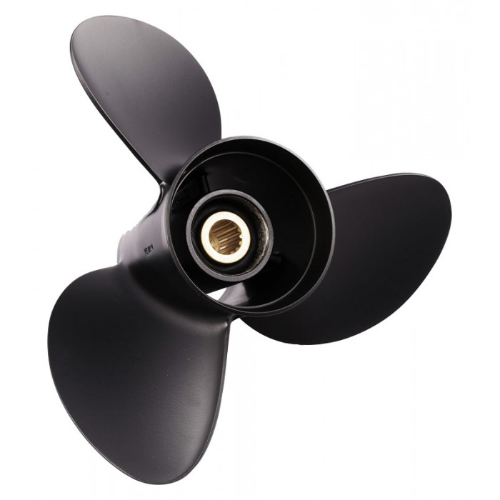 | Amita 3 | 3512-142-23MF | 3 | 14.2" | 23" | Левое | Не нужен |
| 3512-143-21MF | 3 | 14.3" | 21" | Левое | |||
| 3512-145-19MF | 3 | 14.5" | 19" | Левое | |||
| 3512-148-17MF | 3 | 14.9" | 17" | Левое | |||
| 3512-150-15MF | 3 | 15" | 15" | Левое | |||
| 3512-153-19MF | 3 | 15.3" | 19" | Левое | |||
| 3512-153-21MF | 3 | 15.3" | 21" | Левое | |||
| 3512-155-17MF | 3 | 15.5" | 17" | Левое | |||
| 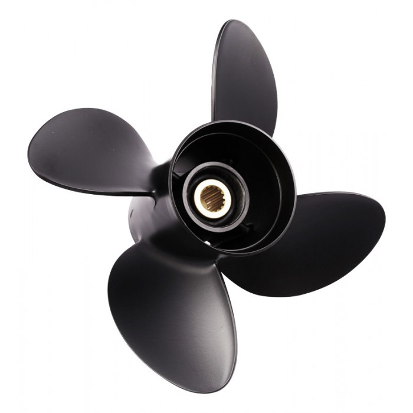 | Amita 4 | 3513-140-21MF | 4 | 14" | 21" | Правое | Не нужен |
| 3513-140-23MF | 4 | 14" | 23" | Правое | |||
| 3513-143-19MF | 4 | 14.3" | 19" | Правое | |||
| 3513-145-17MF | 4 | 14.5" | 17" | Правое | |||
| 3513-148-15MF | 4 | 14.8" | 15" | Правое | |||
| Amita 4 | 3514-140-21MF | 4 | 14" | 21" | Левое | Не нужен | |
| 3514-140-23MF | 4 | 14" | 23" | Левое | |||
| 3514-143-19MF | 4 | 14.3" | 19" | Левое | |||
| 3514-145-17MF | 4 | 14.5" | 17" | Левое | |||
| 3514-148-15MF | 4 | 14.8" | 15" | Левое | |||
| 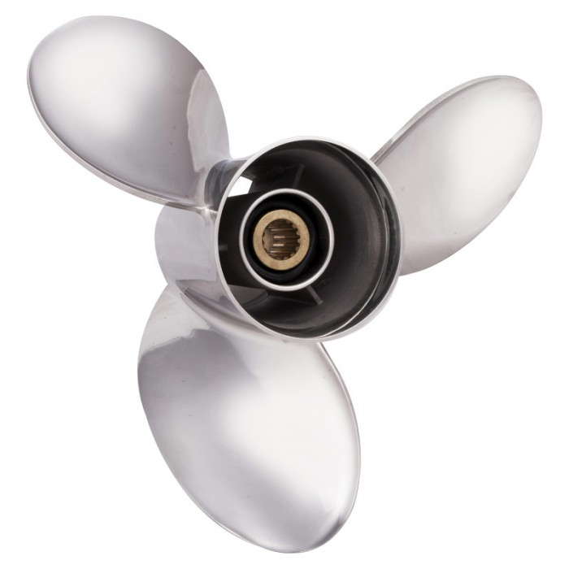 | Lexor | 3571-145-25 | 3 | 14.5" | 25" | Правое | Не нужен |
| 3571-145-27 | 3 | 14.5" | 27" | Правое | |||
| 3571-148-23 | 3 | 14.8" | 23" | Правое | |||
| 3571-150-21 | 3 | 15" | 21" | Правое | |||
| 3571-153-19 | 3 | 15.3" | 19" | Правое | |||
| 3571-155-17 | 3 | 15.5" | 17" | Правое | |||
| Lexor | 3572-145-25 | 3 | 14.5" | 25" | Левое | Не нужен | |
| 3572-148-23 | 3 | 14.8" | 23" | Левое | |||
| 3572-150-21 | 3 | 15" | 21" | Левое | |||
| 3572-153-19 | 3 | 15.3" | 19" | Левое | |||
| 3572-155-17 | 3 | 15.5" | 17" | Левое | |||
| 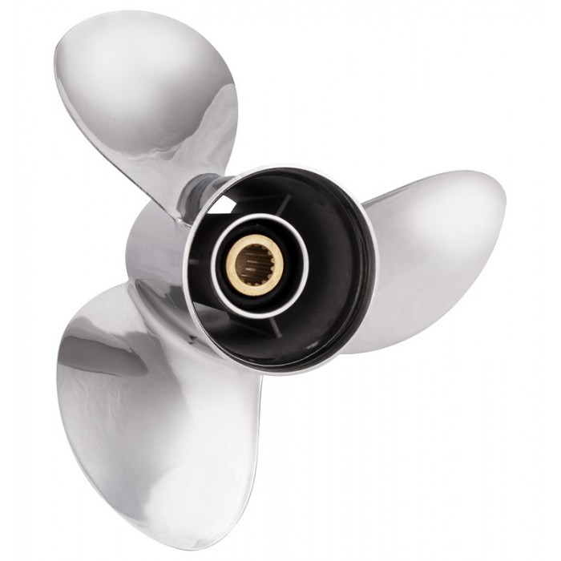 | New Saturn | 3531-140-19MF | 3 | 14" | 19" | Правое | Не нужен |
| 3531-140-21MF | 3 | 14" | 21" | Правое | |||
| 3531-140-23MF | 3 | 14" | 23" | Правое | |||
| 3531-140-25MF | 3 | 14" | 25" | Правое | |||
| 3531-143-17MF | 3 | 14.3" | 17" | Правое | |||
| 3531-145-15MF | 3 | 14.5" | 15" | Правое | |||
 |
New Saturn | 3532-140-19MF | 3 | 14.5" | 25" | Левое | Не нужен |
| 3532-140-21MF | 3 | 14.8" | 23" | Левое | |||
| 3532-140-23MF | 3 | 15" | 21" | Левое | |||
| 3532-143-17MF | 3 | 15.3" | 19" | Левое | |||
| 3532-145-15MF | 3 | 15.5" | 17" | Левое | |||
| 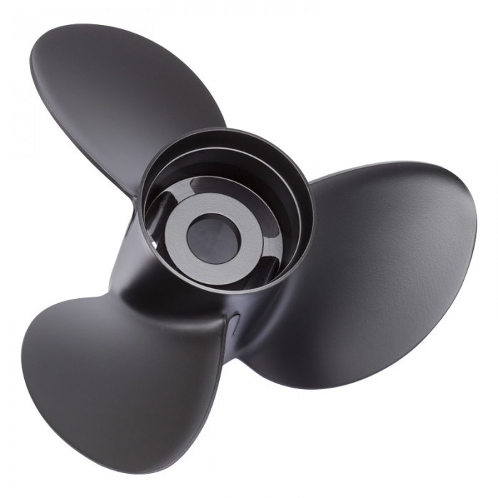 | Rubex 3 | 9511-143-21 | 3 | 14.3" | 21" | Правое | RBX-102 RBX-103 RBX-127 |
| 9511-145-19 | 3 | 14.5" | 19" | Правое | |||
| 9511-148-17 | 3 | 14.8" | 17" | Правое | |||
| 9511-150-15 | 3 | 15" | 15" | Правое | |||
| Rubex 3 | 9512-143-21 | 3 | 14.3" | 21" | Левое | RBX-102 RBX-103 RBX-127 |
|
| 9512-145-19 | 3 | 14.5" | 19" | Левое | |||
| 9512-148-17 | 3 | 14.8" | 17" | Левое | |||
| 9512-150-15 | 3 | 15" | 15" | Левое | |||
| 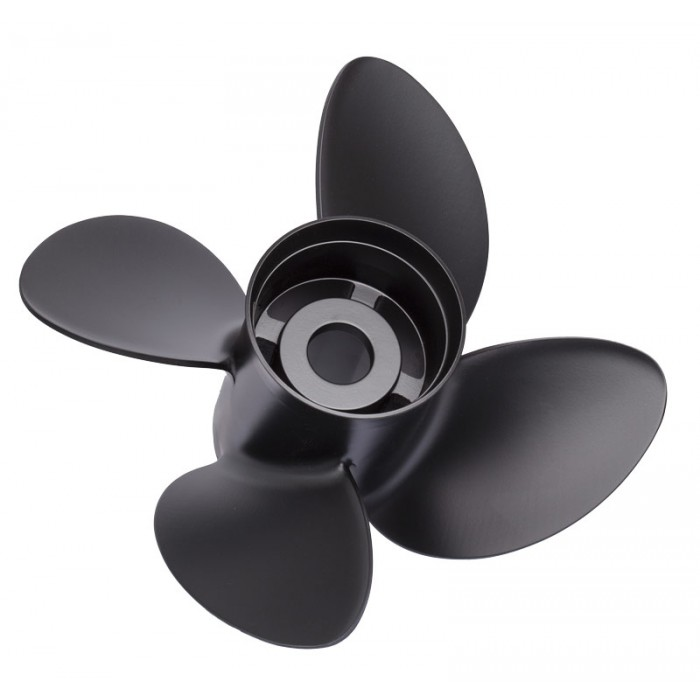 | Rubex 4 | 9513-140-21 | 4 | 14" | 21" | Правое | RBX-102 RBX-103 RBX-127 |
| 9513-143-19 | 4 | 14.3" | 19" | Правое | |||
| 9513-145-17 | 4 | 14.5" | 17" | Правое | |||
| 9513-148-15 | 4 | 14.8" | 15" | Правое | |||
| 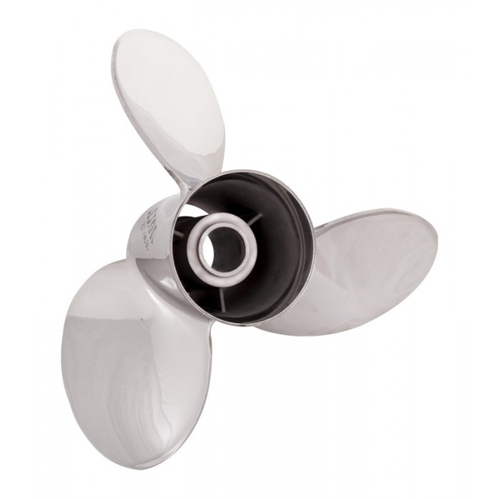 | Rubex L3 | 9571-145-25 | 3 | 14.5" | 25" | Правое | RBX-102 RBX-103 RBX-127 |
| 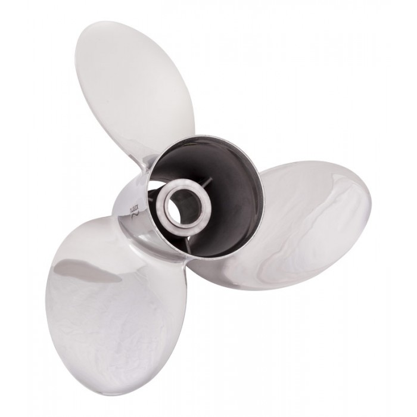 | Rubex L3 Plus | 9571-158-21 | 3 | 15.8" | 21" | Правое | RBX-102 RBX-103 RBX-127 |
| 9571-160-17 | 3 | 16" | 17" | Правое | |||
| 9571-160-19 | 3 | 16" | 19" | Правое | |||
| Rubex L3 Plus | 9572-158-21 | 3 | 15.8" | 21" | Левое | RBX-102 RBX-103 RBX-127 |
|
| 9572-160-17 | 3 | 16" | 17" | Левое | |||
| 9572-160-19 | 3 | 16" | 19" | Левое | |||
| 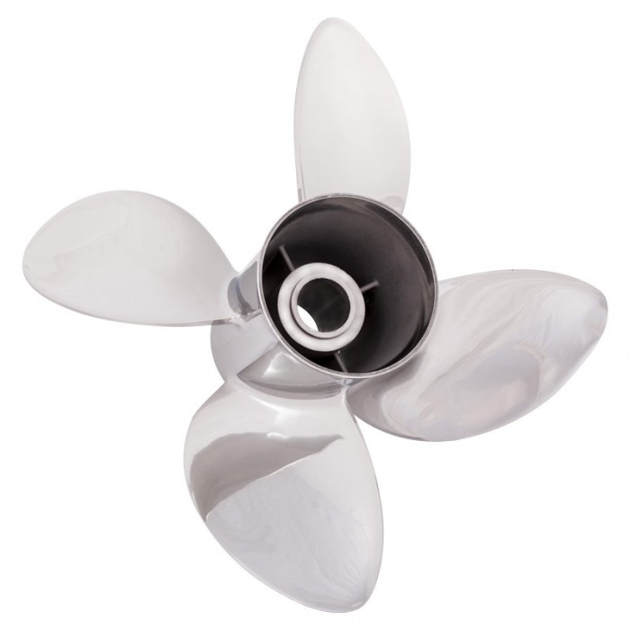 | Rubex L4 | 9573-153-28 | 4 | 15.3" | 28" | Правое | RBX-102 RBX-103 RBX-127 |
| 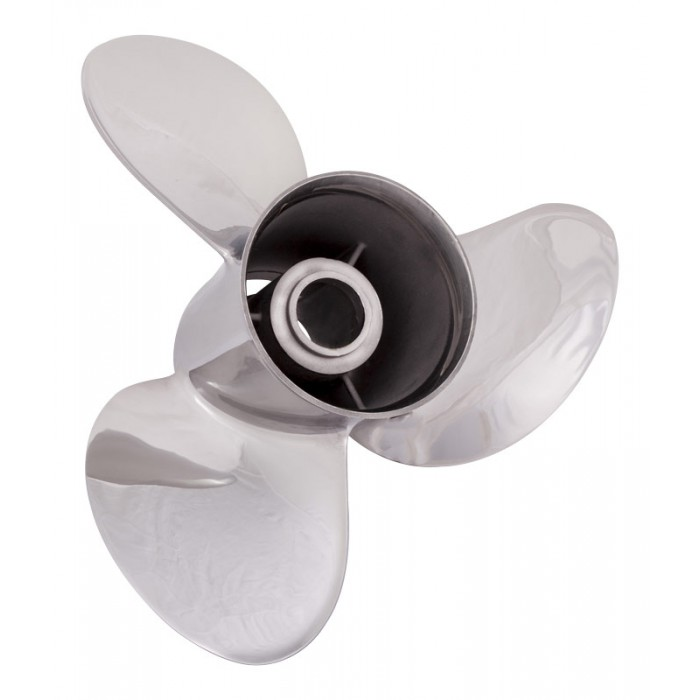 | Rubex NS3 | 9531-140-19 | 3 | 14" | 19" | Правое | RBX-102 RBX-103 RBX-127 |
| 9531-140-21 | 3 | 14" | 21" | Правое | |||
| 9531-140-23 | 3 | 14" | 23" | Правое | |||
| 9531-143-17 | 3 | 14.3" | 17" | Правое | |||
| 9531-145-15 | 3 | 14.5" | 15" | Правое | |||
 |
Rubex NS3 | 9532-140-19 | 3 | 14" | 19" | Левое | RBX-102 RBX-103 RBX-127 |
| 9532-140-21 | 3 | 14" | 21" | Левое | |||
| 9532-140-23 | 3 | 14" | 23" | Левое | |||
| 9532-143-17 | 3 | 14.3" | 17" | Левое | |||
 |
Rubex S3 | 9561-151-23 | 3 | 15.1" | 23" | Правое | RBX-102 RBX-103 RBX-127 |
| 9561-151-25 | 3 | 15.1" | 25" | Правое | |||
| 9561-151-27 | 3 | 15.1" | 27" | Правое | |||
| 9561-151-28 | 3 | 15.1" | 28" | Правое | |||
| Titan | 3542-148-21MF | 3 | 14,8" | 21" | Левое | Не нужен | |
| 3542-150-19MF | 3 | 15" | 19" | Левое | |||
| 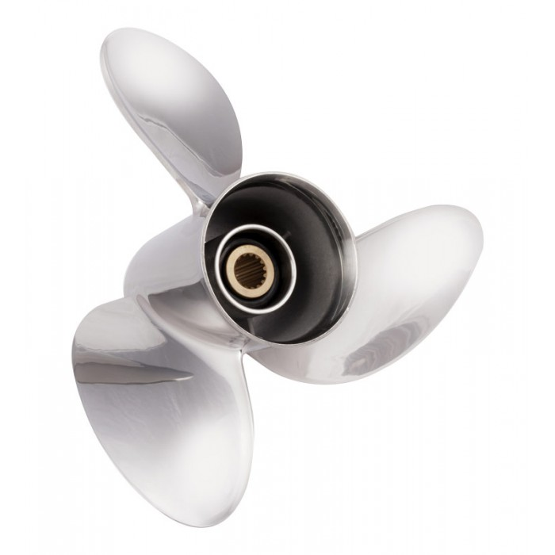 | HR Titan3 | 3551-140-24MF | 3 | 14" | 24" | Правое | Не нужен |
| 3551-143-22MF | 3 | 14.3" | 22" | Правое | |||
| 3551-145-21MF | 3 | 14.5" | 21" | Правое | |||
| 3551-148-18MF | 3 | 14.8" | 18" | Правое | |||
| 3551-148-19MF | 3 | 14.8" | 19" | Правое | |||
| 3551-148-20MF | 3 | 14.8" | 20" | Правое | |||
| HR Titan3 | 3552-140-24MF | 3 | 14" | 24" | Левое | Не нужен | |
| 3552-143-22MF | 3 | 14.3" | 22" | Левое | |||
| 3552-145-21MF | 3 | 14.5" | 21" | Левое | |||
| 3552-148-18MF | 3 | 14.8" | 18" | Левое | |||
| 3552-148-19MF | 3 | 14.8" | 19" | Левое | |||
| 3552-148-20MF | 3 | 14.8" | 20" | Левое | |||
| 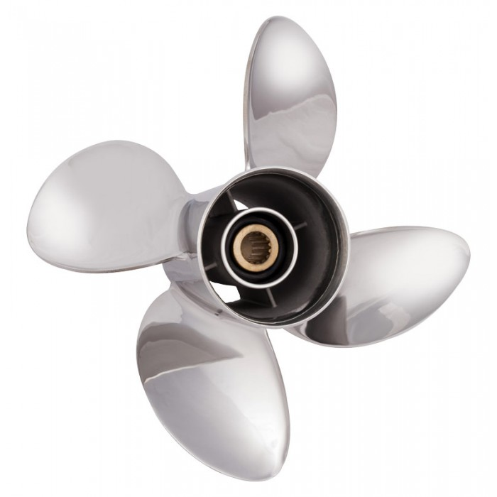 | HR Titan4 | 3553-140-21MF | 4 | 14" | 21" | Правое | Не нужен |
| 3553-140-23MF | 4 | 14" | 23" | Правое | |||
| 3553-140-25MF | 4 | 14" | 25" | Правое | |||
| 3553-141-19MF | 4 | 14.1" | 19" | Правое | |||
| 3553-143-17MF | 4 | 14.3" | 17" | Правое | |||
| 3553-145-15MF | 4 | 14.5" | 15" | Правое | |||
| HR Titan4 | 3554-140-21MF | 4 | 14" | 21" | Левое | Не нужен | |
| 3554-140-25MF | 4 | 14" | 25" | Левое | |||
| 3554-141-19MF | 4 | 14.1" | 19" | Левое | |||
| 3554-143-17MF | 4 | 14.3" | 17" | Левое | |||
| 3554-145-15MF | 4 | 14.5" | 15" | Левое | |||
{kind=link}
{kind=link}
{kind=link}
{kind=link}
{kind=link}
{kind=link}
{kind=link}
{kind=link}
{kind=link}
{kind=link}
{kind=link}
{kind=link}
{kind=link}
{kind=link}
{kind=link}
{kind=link}
{kind=link}
{kind=link}
{kind=link}
|
Диаметр ступицы вала 4 3/4" 15 шлицов на валу 150 л.с. 1986 г. - наст. время F150 л.с. (4-х такт.) 2004 г. - наст. время 175 л.с. 1984 г. - наст. время F175 л.с. (4-х такт.) 2014 г. - наст. время 200 л.с. 1984 г. - наст. время 200 л.с. (Vmax) 2001 г. F200 л.с. (4-х такт.) 2002 г. - наст. время VF200 V-MAX SHO 2010 г. - наст. время 220 л.с. (Special) 1987 - 1988 гг. 225 л.с. (Excel) 1980 г. - наст. время 225 л.с. 1986 г. - наст. время F225 л.с. (4-х такт.) 2002 г. - наст. время VF225 V-MAX SHO 2010 г. - наст. время 250 л.с. 1990 г. - наст. время 250 л.с. (Vmax) 2001 г. - наст. время F250 л.с. (4-х такт.) 2002 г. - наст. время 300 л.с. (4-х такт. V6 Engine) 2003 - 2007 гг. F300 Offshore (4-х такт. V6 Engine) 2010 г. - наст. время 300 л.с. 2004 г. - наст. время F300 л.с. (4-х такт.) 2003 г. - наст. время Sterndrive 3.0 л. - 7.47 л |
|||||||
| Фото | Серия | Номер винта Solas | Количество лопастей | Внешний диаметр винта | Шаг винта | Вращение винта | Установочный комплект |
|---|---|---|---|---|---|---|---|
| 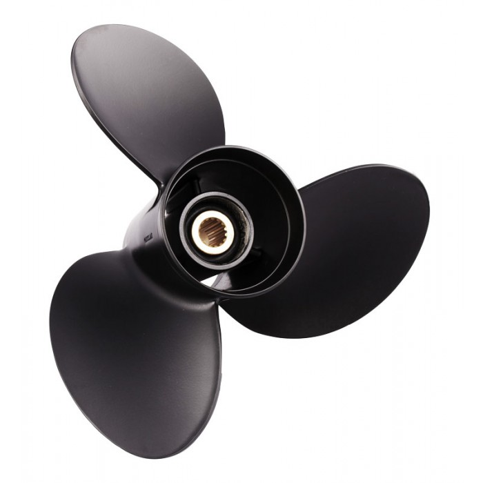 | Amita 3 | 3511-153-19MF | 3 | 15.3" | 19" | Правое | Не нужен |
| 3511-153-21MF | 3 | 15.3" | 21" | Правое | |||
| 3511-153-23MF | 3 | 15.3" | 23" | Правое | |||
| 3511-155-17MF | 3 | 15.5" | 17" | Правое | |||
| 3511-158-15MF | 3 | 15/8" | 15" | Правое | |||
| Amita 3 | 3512-153-19MF | 3 | 15.3" | 19" | Левое | Не нужен | |
| 3512-153-21MF | 3 | 15.3" | 21" | Левое | |||
| 3512-155-17MF | 3 | 15.5" | 17" | Левое | |||
{kind=link}
{kind=link}